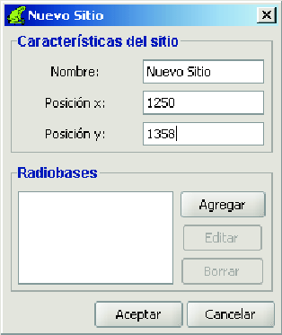

Siguiente: Cómo editar un sitio
Subir: Los sitios
Anterior: Los sitios
Índice General
Hay tres caminos diferentes por los cuales se puede crear un sitio:
- Desde la barra de menú:
Menú Proyecto
 Crear
Sitio
Crear
Sitio
- Desde explorador de sitios, haciendo click con el botón derecho del mouse en
el nodo SITIOS (nodo raíz):
Agregar sitio
- Desde el mapa, haciendo doble click sobre el punto en donde se desea agregar
el nuevo sitio.
Cualquiera de ellos conduce a una ventana similar a la de la figura
11. Luego de completar todos los datos clickear
en Aceptar.
Figura 11:
Ventana para la creación/edición de un sitio
|

|
El sitio creado se agregará al explorador.
SAPO